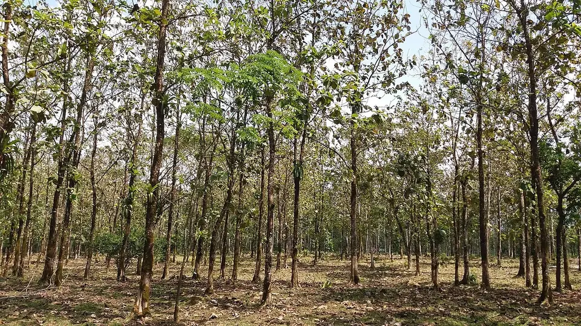

सागौन (टीक) की खेती
Teak Farming — Soil, Spacing, Pruning & Real Returns
सागौन 20–25 साल की फसल है, जल्दी अमीर बनाने वाली स्कीम नहीं। सबसे बड़ी गलती यह है कि इसे जलभराव वाली ज़मीन में लगा दिया जाता है — और नुकसान का पता 8–10 साल बाद चलता है।
✍️ Kunal Rajput — KrashiMitra⏱️ 11 मिनट पढ़ें📅 अगस्त 2026

सागौन का बागान — सीधा, गाँठ-रहित तना ही वह चीज़ है जिस पर लकड़ी का दाम टिकता है।
पेड़ लगाने से पहले ज़मीन देखिए, भाव नहीं
💧
जलभराव
सबसे बड़ी दुश्मन
📏
160–440
पेड़ प्रति एकड़
✂️
2–6 साल
छँटाई का सही समय
📖
भूमिका
सागौन (टीक, Tectona grandis) को भारत में "लकड़ी का राजा" कहा जाता है — और यह नाम बेवजह नहीं है। दीमक इसे आसानी से नहीं लगती, पानी में यह जल्दी नहीं सड़ती, और सालों बाद भी इसका आकार नहीं बिगड़ता। यही वजह है कि दरवाज़े, खिड़की और फर्नीचर के लिए इसकी माँग कभी खत्म नहीं होती।
लेकिन सागौन लगाते समय किसान जो सबसे बड़ी गलती करते हैं वह यह है कि इसे "पैसे छापने की मशीन" समझकर गलत ज़मीन में लगा देते हैं। सच यह है कि सागौन 20 से 25 साल की फसल है, और जलभराव वाली या चिकनी काली ज़मीन में यह कभी अच्छा नहीं होता — चाहे आप जितनी खाद डाल दें। इस लेख में ज़मीन का चुनाव, पौधों की दूरी, शुरुआती सालों की अंतर-फसल, छँटाई, कटाई की कानूनी अनुमति और कमाई का असली गणित — बिना बढ़ा-चढ़ाकर बताए।
विज्ञापन
🤔
सागौन किसके लिए सही है, किसके लिए नहीं
पेड़ लगाने का फैसला फसल लगाने के फैसले से बिल्कुल अलग होता है। धान या गेहूं में गलती हुई तो अगले सीज़न सुधार लेंगे। सागौन में गलती हुई तो पता 8–10 साल बाद चलेगा, और तब तक ज़मीन का वह हिस्सा किसी और काम का नहीं रहेगा। इसलिए पहले यह तय कीजिए कि यह आपके लिए है भी या नहीं।
सही है, अगर: आपके पास ऐसी ज़मीन है जिस पर हर साल फसल लेने का दबाव नहीं है — मेड़, खेत का कोई कोना, या ऐसा टुकड़ा जो सिंचाई के अंतिम छोर पर है और जहाँ फसल वैसे भी कमज़ोर रहती है।
सही है, अगर: आप इसे बच्चों की पढ़ाई या शादी जैसे लंबे लक्ष्य के लिए बचत की तरह देख रहे हैं — पेड़ हर साल चुपचाप बढ़ता रहेगा।
सही नहीं, अगर: आपकी पूरी आमदनी उसी ज़मीन से चलती है और आप 20 साल इंतज़ार नहीं कर सकते।
सही नहीं, अगर: ज़मीन में बरसात में पानी भरता है या नीचे कड़ी चट्टानी परत है। सागौन की जड़ गहरी जाती है — रुका पानी इसे मार देता है।
सही नहीं, अगर: खेत की रखवाली नहीं हो सकती। शुरुआती 2–3 साल में मवेशी और बकरी छोटे पौधों को चर जाती हैं।
💡
सागौन को अपनी मुख्य फसल की जगह मत बनाइए — इसे मेड़ और बची हुई ज़मीन की फसल बनाइए। खेत की मेड़ पर लगे 100–200 पेड़ बिना किसी फसल का नुकसान किए, 20 साल में एक बड़ी रकम बन जाते हैं। यही सबसे कम जोखिम वाला तरीका है।
🌍
ज़मीन और जलवायु — यहीं आधा फैसला हो जाता है
सागौन की लकड़ी की गुणवत्ता और बढ़वार, दोनों ज़मीन तय करती है। एक ही उम्र के दो पेड़ों में, अच्छी ज़मीन वाला पेड़ खराब ज़मीन वाले से दोगुनी मोटाई तक ले सकता है — और दाम मोटाई पर ही मिलता है।
बात
✅ सागौन के लिए अच्छा
❌ यहाँ मत लगाइए
मिट्टी
गहरी, भुरभुरी, दोमट या बलुई दोमट
भारी चिकनी काली मिट्टी, जो सूखने पर फटती है
पानी की निकासी
बरसात का पानी तुरंत निकल जाए
खेत में 2–3 दिन पानी ठहरता हो
ज़मीन की गहराई
कम से कम 1 मीटर गहरी मिट्टी
डेढ़-दो फुट नीचे ही पत्थर या कड़ी परत
मिट्टी का pH
लगभग 6.5 – 7.5
ऊसर, कल्लर या खारी ज़मीन
बारिश
सालाना 1000–2500 मि.मी.
बहुत कम बारिश और सिंचाई की भी सुविधा नहीं
तापमान
गर्म इलाका; पाला बहुत कम पड़ता हो
जहाँ हर साल तेज़ पाला पड़ता है
भारत में सागौन सबसे अच्छा मध्य प्रदेश, महाराष्ट्र, छत्तीसगढ़, ओडिशा, कर्नाटक, केरल और तमिलनाडु की परिस्थितियों में होता है। उत्तर भारत के मैदानों में भी यह लगाया जाता है और चल जाता है, पर वहाँ बढ़वार आमतौर पर थोड़ी धीमी रहती है — इसका ध्यान अपनी उम्मीदों में रखिए।
🌱
पौध, दूरी और रोपाई का सही तरीका
पौध की गुणवत्ता वह चीज़ है जिस पर 20 साल टिके हैं, और यही वह जगह है जहाँ सबसे ज़्यादा ठगी होती है। पौध हमेशा सरकारी वन विभाग की नर्सरी, राज्य वन विकास निगम, या किसी मान्यता प्राप्त संस्थान से ही लें। सड़क किनारे बिकते सस्ते पौधों की न तो नस्ल का पता होता है, न मातृ-वृक्ष का।
पौध का प्रकार: आम तौर पर स्टंप (जड़-तना कटिंग) या पॉलीबैग वाले पौधे लगाए जाते हैं। स्टंप सस्ता पड़ता है और अच्छी बारिश में इसकी सफलता अच्छी रहती है। क्लोनल/टिशू-कल्चर पौधे महँगे होते हैं; इनका दावा तेज़ और एक-सी बढ़वार का होता है — खरीदने से पहले उस नर्सरी के पुराने बागान खुद जाकर देखिए।
रोपाई का समय:मानसून की पहली अच्छी बारिश के तुरंत बाद (आमतौर पर जून–जुलाई)। यही एक समय है जब पौधे को बिना सिंचाई के जड़ पकड़ने का पूरा मौका मिलता है।
गड्ढा: लगभग 45×45×45 सेंटीमीटर। गड्ढा बारिश से पहले, मई-जून में खोदकर कुछ दिन खुला छोड़ दें — धूप से मिट्टी के कीड़े और रोग मर जाते हैं।
गड्ढा भरना: ऊपर की मिट्टी में सड़ी गोबर की खाद मिलाकर भरें। गड्ढे में सीधे रासायनिक खाद न डालें — नई जड़ें जल जाती हैं।
ज़रूरी: पौधे के चारों ओर मिट्टी थोड़ी ऊँची करके रखें ताकि पानी जड़ पर न ठहरे।
दूरी
लगभग पेड़ / एकड़
किसके लिए
3 × 3 मीटर
लगभग 440
घना बागान; बीच में छँटाई (thinning) करके धीरे-धीरे संख्या घटाई जाती है
4 × 4 मीटर
लगभग 250
सबसे संतुलित — मोटाई अच्छी मिलती है, बीच में फसल भी लंबे समय तक ली जा सकती है
5 × 5 मीटर
लगभग 160
खेती के साथ पेड़ (कृषि-वानिकी); फसल का नुकसान सबसे कम
मेड़ पर एक कतार
दूरी 3–4 मीटर
सबसे कम जोखिम वाला तरीका — खेत की फसल चलती रहती है
विज्ञापन
✂️
देखभाल — शुरुआती 4 साल ही असली मेहनत हैं
सागौन में अच्छी बात यह है कि पाँचवें साल के बाद यह लगभग अपने आप बढ़ता है। पर पहले 3–4 साल की देखभाल ही तय करती है कि आपका पेड़ सीधा और मोटा बनेगा या टेढ़ा और पतला।
खरपतवार और थाला: पहले दो साल पौधे के चारों ओर लगभग एक मीटर का घेरा साफ रखें। घास पानी और पोषण दोनों छीन लेती है — यह वह मेहनत है जिसका सबसे ज़्यादा फायदा मिलता है।
सिंचाई: बारिश के भरोसे भी चल जाता है, पर पहले दो गर्मियों में 10–15 दिन के अंतर पर पानी देने से बढ़वार साफ तेज़ दिखती है।
छँटाई (प्रूनिंग) — सबसे ज़रूरी काम: नीचे की बगल वाली डालें समय-समय पर काटते रहें, ताकि तना नीचे से सीधा और गाँठ-रहित बने। लकड़ी का दाम गाँठ-रहित सीधे हिस्से (क्लियर बोल) की लंबाई पर बहुत निर्भर करता है। छँटाई हमेशा तने से सटाकर, साफ औज़ार से करें और बरसात में करने से बचें।
एक ही तना रखें: अगर नीचे से दो-तीन तने निकल आएँ तो सबसे मज़बूत और सीधा एक रखकर बाकी काट दें।
छँटाई (थिनिंग): घने बागान में 8–10 साल के आसपास कमज़ोर और टेढ़े पेड़ निकाल दिए जाते हैं ताकि बाकी को जगह और रोशनी मिले। निकाली गई लकड़ी छोटी सही, बिकती है।
आग से बचाव: गर्मी से पहले बागान के चारों ओर सूखी घास साफ करके एक पट्टी बना दें। खेत की आग एक रात में बरसों की मेहनत ले जाती है।
💡
सागौन का सबसे आम कीट है पत्ती खाने वाली सूँडी (टीक डिफोलिएटर), जो बरसात में पत्तियाँ चट कर जाती है। घबराइए नहीं — बड़ा पेड़ आमतौर पर दोबारा पत्तियाँ निकाल लेता है। छोटे पौधों में बार-बार हमला हो तो ही नज़दीकी वन विभाग या कृषि विज्ञान केंद्र (KVK) से सलाह लेकर उपचार करें।
🌾
अंतर-फसल — 20 साल तक खाली बैठने की ज़रूरत नहीं
यह वह हिस्सा है जो सागौन को व्यावहारिक बनाता है। शुरुआती सालों में पेड़ छोटा है, छाया कम है — यानी ज़मीन खाली नहीं छोड़नी पड़ती।
साल
बीच में क्या ले सकते हैं
1 – 3 साल
लगभग कोई भी सामान्य फसल — गेहूं, चना, सरसों, मूंग, उड़द, सब्ज़ियाँ, हल्दी, अदरक
4 – 6 साल
छाया बढ़ने लगती है — हल्दी, अदरक, अरबी जैसी छाया सहने वाली फसलें बेहतर
7 साल के बाद
ज़्यादातर फसलें मुश्किल; चारा घास या मधुमक्खी पालन जैसे विकल्प देखें
दलहन (चना, मूंग, उड़द, अरहर) को खास तौर पर चुनिए — ये ज़मीन में नाइट्रोजन छोड़ती हैं, जिससे पेड़ को भी फायदा होता है और आपकी खाद की लागत घटती है।
💰
कमाई का असली गणित — और नर्सरी के दावों का सच
इंटरनेट और नर्सरी के पर्चों पर आपको "एक एकड़ सागौन = इतने करोड़" जैसे दावे मिलेंगे। ऐसे दावे लगभग हमेशा तीन चालाकियों पर टिके होते हैं: वे मान लेते हैं कि हर पेड़ बचेगा, हर पेड़ सबसे अच्छी मोटाई तक पहुँचेगा, और आपको सबसे ऊँचा बाज़ार भाव मिलेगा। असल में तीनों एक साथ कभी नहीं होते।
सागौन की लकड़ी का दाम एक तय "रेट" से नहीं, इन बातों से बनता है:
गोलाई (गर्थ): सबसे बड़ा कारक। मोटे तने का दाम पतले से कई गुना ज़्यादा होता है — इसीलिए सही दूरी और छँटाई इतनी मायने रखती है।
लकड़ी का रंग और दाना: पुराने, धीरे बढ़े पेड़ की लकड़ी का दाना बेहतर माना जाता है।
खरीदार कितनी दूर है: लकड़ी भारी होती है। ढुलाई का खर्च सीधे आपके हाथ में आने वाली रकम से कटता है।
बिक्री का तरीका: खड़े पेड़ का सौदा (ठेकेदार खुद काटकर ले जाए) आसान होता है पर दाम कम मिलता है। खुद कटवाकर डिपो/नीलामी तक ले जाने में मेहनत ज़्यादा, दाम बेहतर।
⚠️
कोई भी संख्या मानने से पहले अपने इलाके में जाँच लें। सागौन का भाव राज्य, गोलाई, गुणवत्ता और बाज़ार के अनुसार बहुत बदलता है, और यह मंडी भाव की तरह रोज़ प्रकाशित नहीं होता। सबसे भरोसेमंद तरीका: अपने राज्य वन विकास निगम के डिपो की पिछली नीलामी दरें पता करना, और 2–3 स्थानीय आरा मशीन (सॉ मिल) वालों से अलग-अलग भाव पूछना। किसी भी "गारंटीड बायबैक" या "इतने साल में इतना पैसा" वाले लिखित-मौखिक वादे पर पैसा लगाने से पहले उस कंपनी का पुराना रिकॉर्ड और कागज़ ज़रूर जाँचें। कृषि मित्र कोई निवेश सलाह नहीं देता।
📜
कटाई और परिवहन की अनुमति — पहले दिन जान लीजिए
यह वह हिस्सा है जिसे किसान 20 साल तक टालते हैं और आखिर में फँसते हैं। अपनी ज़मीन पर लगा पेड़ आपका है — पर उसे काटने और खेत से बाहर ले जाने के नियम राज्य सरकार बनाती है, और सागौन कई राज्यों में विशेष रूप से नियंत्रित प्रजाति है।
नियम राज्य के अनुसार अलग हैं। कुछ राज्यों ने निजी ज़मीन पर लगाई गई प्रजातियों को नियमों में छूट दी है, कुछ में सागौन के लिए अब भी अनुमति (परमिट) और परिवहन पास ज़रूरी है।
रोपाई के समय ही रिकॉर्ड बनवाएँ। कितने पेड़, किस खसरा/गाटा संख्या पर, किस साल लगाए — यह जानकारी अपने पास लिखित रखें और हो सके तो पटवारी/लेखपाल के रिकॉर्ड और खतौनी में दर्ज करा लें। यही कागज़ 20 साल बाद यह साबित करेगा कि पेड़ आपने लगाया था, यह जंगल का नहीं है।
फोटो रखें। रोपाई के समय और हर कुछ साल बाद खेत की फोटो तारीख के साथ रख लें।
बेचने से पहले पूछें, बाद में नहीं। काटने से पहले अपने जिला वन कार्यालय (DFO) से लिखित में पूछ लें कि आपके राज्य में इस प्रजाति के लिए क्या प्रक्रिया है।
⚠️
पेड़ों की कटाई और परिवहन से जुड़े नियम राज्य और समय के साथ बदलते रहते हैं, और यह लेख किसी भी राज्य के मौजूदा नियम की आधिकारिक जानकारी नहीं है। कोई भी पेड़ काटने से पहले अपने जिला वन अधिकारी (DFO) या राज्य वन विभाग से ही पुष्टि करें। बिना अनुमति कटाई पर जुर्माना और कानूनी कार्रवाई हो सकती है।
🚫
ये गलतियाँ कभी न करें
जलभराव वाली ज़मीन में लगाना — सागौन की सबसे बड़ी दुश्मन रुका हुआ पानी है। यह एक गलती बाकी सारी मेहनत बेकार कर देती है।
अनजान नर्सरी से सस्ती पौध लेना — 20 साल बाद पता चलेगा कि नस्ल कमज़ोर थी, और तब कुछ नहीं हो सकता।
छँटाई न करना — बिना छँटाई का पेड़ नीचे से गाँठदार और टेढ़ा रहता है, जिसका दाम बहुत कम मिलता है।
बहुत पास-पास लगाना और फिर थिनिंग न करना — सारे पेड़ पतले रह जाते हैं। संख्या से नहीं, मोटाई से पैसा बनता है।
पूरा खेत सागौन से भर देना — 20 साल तक उस ज़मीन से कोई नियमित आमदनी नहीं रहेगी। मेड़ और हिस्सों में लगाइए।
"बायबैक गारंटी" वाली स्कीम में पैसा लगाना — कागज़, कंपनी का रिकॉर्ड और ज़मीन का मालिकाना हक जाँचे बिना कभी नहीं।
कागज़ न बनवाना — रोपाई का रिकॉर्ड न होने पर कटाई की अनुमति लेने में सबसे ज़्यादा परेशानी होती है।
🗓️
साल-दर-साल — कब क्या करना है
समय
ज़रूरी काम
मई – जून
गड्ढे खोदें, खुला छोड़ें; अच्छी नर्सरी से पौध/स्टंप बुक करें
जून – जुलाई (पहली अच्छी बारिश)
रोपाई; गड्ढा गोबर की खाद मिली मिट्टी से भरें
पहला साल
थाला साफ रखें, मरे हुए पौधों की जगह नए लगाएँ, मवेशी से बचाव
1 – 3 साल
बीच में गेहूं/चना/सरसों/सब्ज़ी की अंतर-फसल; गर्मी में सिंचाई
2 – 6 साल
हर साल नीचे की डालों की छँटाई — सीधा तना बनाने का यही समय है
हर गर्मी
बागान के चारों ओर आग से बचाव की पट्टी बनाएँ
8 – 12 साल
पहली थिनिंग — कमज़ोर व टेढ़े पेड़ निकालें; यह लकड़ी भी बिकती है
20 – 25 साल
मुख्य कटाई; पहले DFO कार्यालय से अनुमति की प्रक्रिया पूरी करें
✅
निष्कर्ष
तीन बातें याद रखिए। पहली — ज़मीन ही सबसे बड़ा फैसला है; जहाँ पानी ठहरता हो वहाँ सागौन कभी मत लगाइए। दूसरी — पैसा संख्या से नहीं, मोटाई से बनता है, इसलिए सही दूरी, छँटाई और थिनिंग को हल्के में मत लीजिए। तीसरी — कागज़ पहले दिन से बनाइए, क्योंकि कटाई की अनुमति उसी रिकॉर्ड पर टिकी होगी।
और सबसे ज़रूरी बात: सागौन को अपनी रोज़ की रोटी मत बनाइए। इसे मेड़ पर, खेत के कोनों में, बची हुई ज़मीन पर लगाइए — जहाँ यह आपकी चालू खेती को छुए बिना, हर साल चुपचाप मोटा होता रहे।
सागौन जल्दी अमीर बनाने वाली फसल नहीं है — यह ज़मीन में लगाई गई बचत है, जो 20 साल बाद ब्याज समेत लौटती है।
विज्ञापन
❓
अक्सर पूछे जाने वाले सवाल
1सागौन का पेड़ कितने साल में तैयार होता है?
अच्छी लकड़ी के लिए सागौन को आमतौर पर 20 से 25 साल लगते हैं। 8–12 साल के आसपास पहली छँटाई (थिनिंग) से पतली लकड़ी ज़रूर निकल आती है और बिक जाती है, पर असली दाम मोटे तने का ही मिलता है — इसलिए जल्दी काटने में नुकसान रहता है।
2एक एकड़ में सागौन के कितने पेड़ लगते हैं?
दूरी के अनुसार लगभग 160 से 440 पेड़ प्रति एकड़। 3×3 मीटर पर करीब 440, 4×4 मीटर पर करीब 250 और 5×5 मीटर पर करीब 160 पेड़ आते हैं। ज़्यादा पेड़ लगाने पर बीच में थिनिंग करनी ही पड़ती है, वरना सभी पेड़ पतले रह जाते हैं।
3सागौन की खेती से एक एकड़ में कितनी कमाई होती है?
इसका कोई एक तय जवाब नहीं है, और जो लोग तय संख्या बताते हैं वे आमतौर पर बढ़ा-चढ़ाकर बताते हैं। कमाई चार बातों पर निर्भर करती है — तने की गोलाई, सीधे हिस्से की लंबाई, कितने पेड़ बचे, और खरीदार कितनी दूर है। सही अंदाज़ा लगाने के लिए अपने राज्य वन विकास निगम के डिपो की पिछली नीलामी दरें देखें और 2–3 स्थानीय आरा मशीन वालों से भाव पूछें।
4क्या सागौन काटने के लिए सरकार की अनुमति चाहिए?
ज़्यादातर मामलों में हाँ — पेड़ आपका होने पर भी काटने और ले जाने के नियम राज्य सरकार तय करती है, और सागौन कई राज्यों में नियंत्रित प्रजाति है। नियम राज्य-दर-राज्य अलग हैं और बदलते रहते हैं, इसलिए काटने से पहले अपने जिला वन कार्यालय (DFO) से लिखित में प्रक्रिया पूछ लें। रोपाई के समय ही खतौनी/राजस्व रिकॉर्ड में पेड़ दर्ज करा लेना बाद में बहुत काम आता है।
5सागौन किस मिट्टी में नहीं लगाना चाहिए?
जलभराव वाली, भारी चिकनी काली और ऊसर/खारी मिट्टी में सागौन कभी न लगाएँ। रुका हुआ पानी इसकी जड़ को सड़ा देता है और पेड़ या तो मर जाता है या बरसों तक ठिगना रहता है। ऐसी ज़मीन में सिर्फ खाद डालकर सुधार नहीं होता — जगह बदलना ही सही फैसला है।
6सागौन के साथ कौन सी फसल ली जा सकती है?
शुरुआती 3 साल तक लगभग हर सामान्य फसल — गेहूं, चना, सरसों, मूंग, उड़द और सब्ज़ियाँ। 4–6 साल में छाया बढ़ने पर हल्दी, अदरक और अरबी जैसी छाया सहने वाली फसलें बेहतर रहती हैं। दलहन खास तौर पर फायदेमंद हैं क्योंकि वे मिट्टी में नाइट्रोजन छोड़ती हैं।
7सागौन की छँटाई (प्रूनिंग) क्यों ज़रूरी है?
क्योंकि लकड़ी का दाम गाँठ-रहित सीधे तने की लंबाई पर बहुत निर्भर करता है। नीचे की बगल वाली डालें समय पर न काटी जाएँ तो तने में गाँठें पड़ जाती हैं और वही लकड़ी कम दाम में बिकती है। शुरुआती 2 से 6 साल तक हर साल हल्की छँटाई करना सबसे फायदेमंद काम है।
8सागौन का पौधा कहाँ से खरीदना चाहिए?
सरकारी वन विभाग की नर्सरी, राज्य वन विकास निगम या किसी मान्यता प्राप्त संस्थान से ही। सड़क किनारे बिकने वाले सस्ते पौधों की नस्ल और मातृ-वृक्ष का कोई रिकॉर्ड नहीं होता, और कमज़ोर नस्ल का पता 8–10 साल बाद चलता है, जब कुछ नहीं किया जा सकता।
🌾
KrashiMitra.in — आपका विश्वसनीय कृषि साथी
मंडी भाव, सरकारी योजनाएं, बीज-खाद की जानकारी और फसल रोग उपचार — सब कुछ हिंदी में।